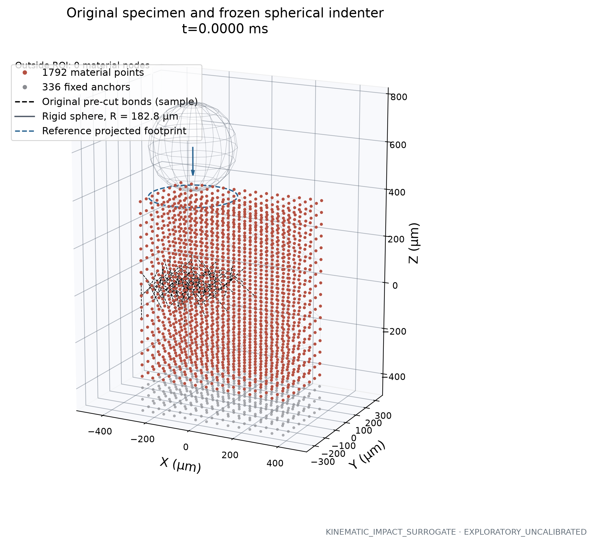
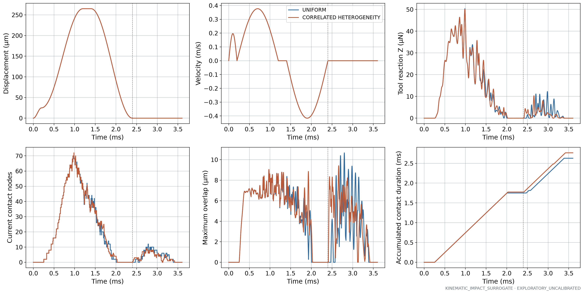
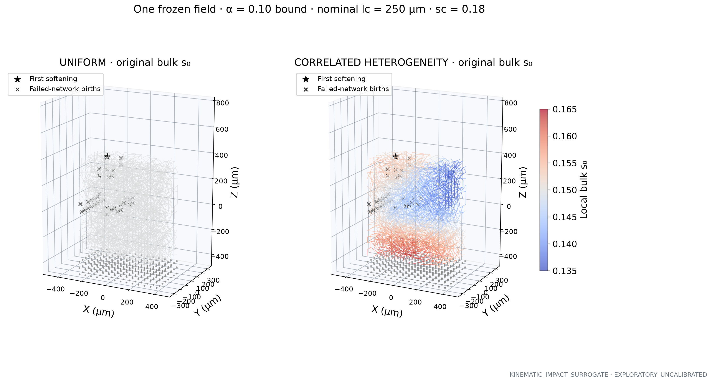
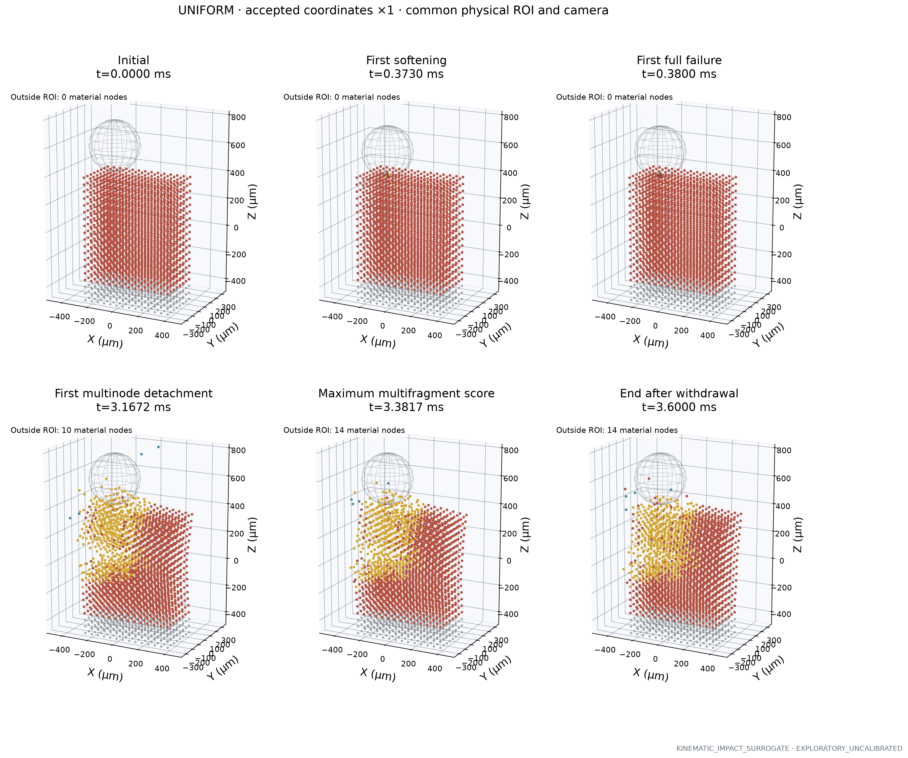
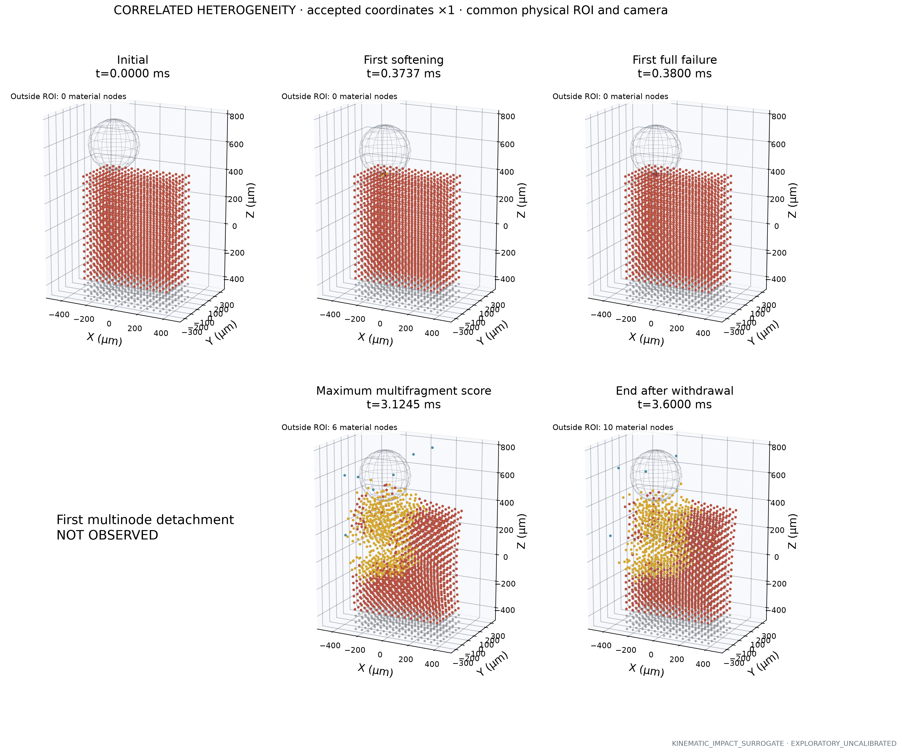
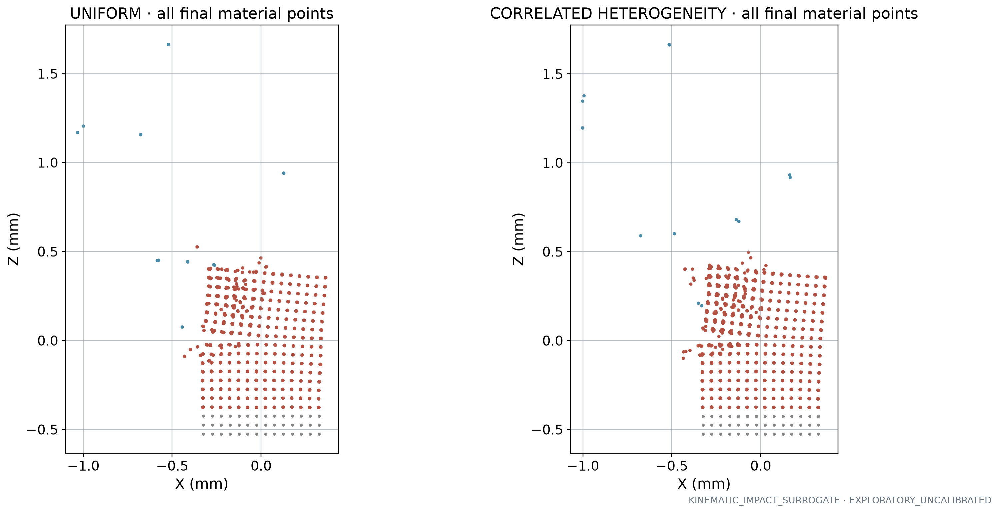
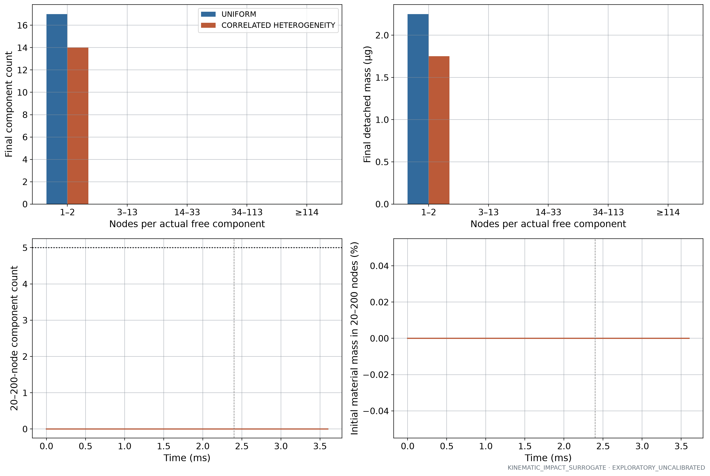
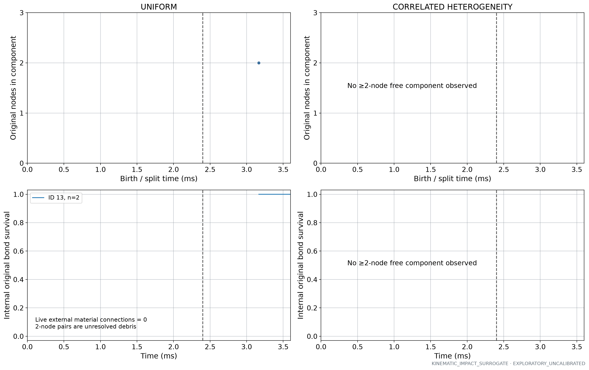
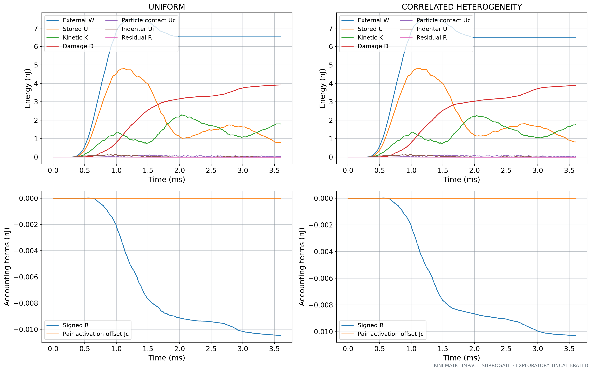
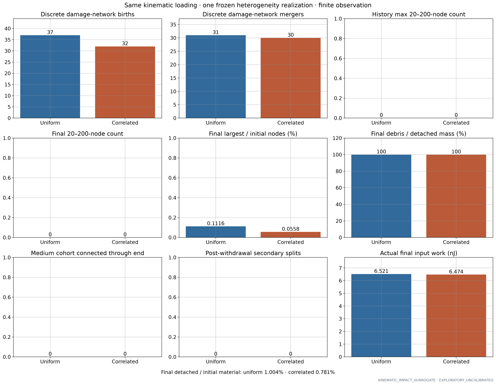

KINEMATIC_IMPACT_SURROGATE · EXPLORATORY_UNCALIBRATED · actual native accepted states
中文科研报告 · Fragment CSV · Final status

Original 1792 material points, 336 anchors and original pre-cut bonds. Sphere represents the actual native contact geometry; no new cuts or continuous clot shell. Blue circle is the reference projected footprint, not measured instantaneous contact area. Arrow indicates the inward trajectory, not a force scale.

Actual imposed motion and native contact response. Dashed line marks scheduled withdrawal completion; any later contact is physical recontact, not persistent reference-node traction. Contact area is represented by node count; it is not a measured continuous area.

Same original bulk bond sample, coordinate frame and camera in both panels. Field acts on original bond ID; interface unchanged. Black stars show actual first-softening reference locations. lc is an uncalibrated correlation hypothesis, not a measured clot microstructure.

Actual accepted states at displacement ×1, with fixed physical ROI/camera. Missing events are explicitly absent. Maximum score prioritizes the number and mass of 20–200-node components; it does not invent fragments. Black stars and magenta original bond segments identify the first softening/failure events. Red attached, gold incident to partially softened bonds, blue detached, gray anchors. Out-of-ROI counts are printed; full final extent follows.

Actual accepted states at displacement ×1, with fixed physical ROI/camera. Missing events are explicitly absent. Maximum score prioritizes the number and mass of 20–200-node components; it does not invent fragments. Black stars and magenta original bond segments identify the first softening/failure events. Red attached, gold incident to partially softened bonds, blue detached, gray anchors. Out-of-ROI counts are printed; full final extent follows.

All final material and anchor coordinates in X–Z projection; no particles are clipped by the main 3D camera ROI.

Counts use actual live-bond connected components and anchor reachability. Contact pairs never connect fragments. A 20-node component is not a resolved 200 µm continuum fragment. Zero bars mean no such final components.

Births and split links derive from exact original atom membership. Bottom panels show up to five largest observed ≥2-node components; two-node pairs remain unresolved debris, not cohesive continuum blocks. Free components have zero surviving external material connections, independently checked against original graph boundaries. Dashed line marks tool withdrawal completion; stability is limited to the actual observation window.

Native material and contact energies, independently integrated moving-tool work, exact damage energy drop and signed numerical residual. No numerical damping. Pair-contact activation offset is separate; residual is not material dissipation. Equal trajectories do not imply equal work.

Exploratory comparison of one uniform and one fixed correlated-field case. Undefined debris ratios are labeled UNDEFINED; the denominator is detached mass, not the entire specimen. No claim of clot microstructure calibration, mesh convergence, ultrasound feasibility or V3 transfer.